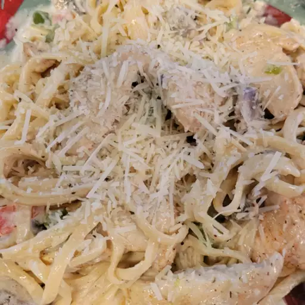

Creamy Cajun Chicken Pasta

Description
Try this when you are feeling daring and want to mix things up a bit!
A Southern inspired recipe that is sure to add a little fun to your dinner table.
Ingredients
- 4 Ounces of Linguine Pasta
- 2 boneless, skinless chicken breast halves,
sliced into thin stripes
- 2 Teaspoons Cajun seasoning
- 2 tablespoons butter
- 1 green bell pepper, chopped
- 1/2 red bell pepper, chopped
- 4 fresh mushrooms, sliced
- 1 green onion, minced
- 1 1/2 cups heavy cream
- 1/4 teaspoon dried basil
- 1/4 teaspoon lemon pepper
- 1/4 teaspoon salt
- 1/8 teaspoon garlic powder
- 1/8 teaspoon ground black pepper
- 2 tablespoons grated Parmesan cheese
Steps
- Bring a large pot of lightly salted water to a boil.
Add linguini pasta, and cook for 8 to 10 minutes,
or until al dente; drain.
-
Meanwhile, place chicken and Cajun seasoning in a bowl, and toss to coat.
-
In a large skillet over medium heat, saute chicken in butter until no longer pink
and juices run clear, about 5 to 7 minutes. Add green and red bell peppers, sliced
mushrooms and green onions; cook for 2 to 3 minutes. Reduce heat, and stir in
heavy cream. Season the sauce with basil, lemon pepper, salt, garlic powder and
ground black pepper, and heat through.
-
In a large bowl, toss linguini with sauce. Sprinkle with grated Parmesan cheese.